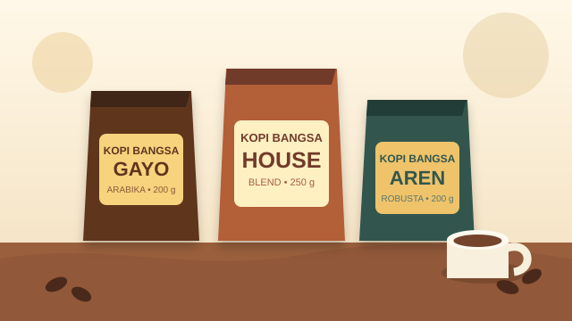
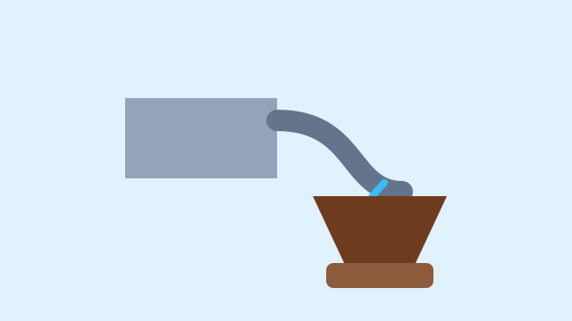

Galeri Kopi Bangsa
Media Usaha



Nada Penanda Kedai
Dengarkan nada dua ketukan yang digunakan sebagai penanda suasana kedai.


Dengarkan nada dua ketukan yang digunakan sebagai penanda suasana kedai.